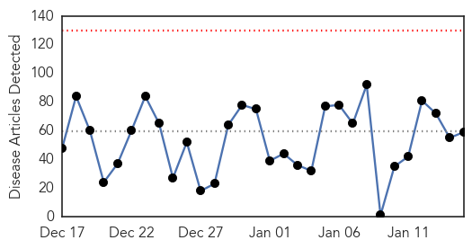
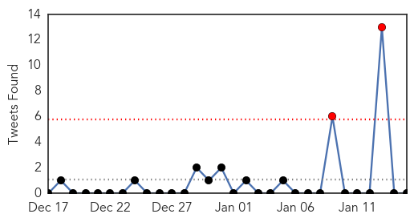

Unknown
30-Day Web Trend
0 alerts, 0 warnings

30-Day Twitter Trend
2 alerts, 0 warnings

Article Locations
Article Confidences

Top Articles:
- 0.997
- Flu vaccine not working well; only 23 percent effective
- 0.995
- Flu vaccine proves far less effective than usual
- 0.993
- California flu season “sporadic,” despite reports of severe flu projections
- 0.992
- Three older people in NKY have died of flu
- 0.989
- Experts “Guessed” Wrong Which Vaccine to Use In Fighting the Flu Virus this Season.
- 0.988
- Delaware Urges More to Get Flu Shot Amid Rising Cases
- 0.985
- UPDATED: Health Officials Report Rising Total of Flu Deaths in D
- 0.972
- Flu Cases Down in Kanawha County
- 0.969
- Major vesicular stomatitis outbreak no evidence of disease on the rise
- 0.964
- Deadly MERS virus spreads from camels to people only rarely
- 0.951
- Flu vaccine unaffected by virus mutations on the horizon
- 0.917
- Chicago Tribune
- 0.917
- Chicago Tribune
- 0.917
- Chicago Tribune
- 0.917
- Chicago Tribune
- 0.917
- Chicago Tribune
- 0.917
- Chicago Tribune
- 0.917
- Chicago Tribune
- 0.917
- Chicago Tribune
- 0.917
- Chicago Tribune
- 0.917
- Chicago Tribune
- 0.917
- Chicago Tribune
- 0.917
- Chicago Tribune
- 0.917
- Chicago Tribune
- 0.911
- Public Health Ministry launches diphtheria vaccination program
- 0.910
- The world windows to Thailand
- 0.896
- Mystery illness sickens kids across U.S.
- 0.892
- Bacterial infection shigellosis spikes in sections of Brooklyn
- 0.866
- Turkish PM says Israel's Netanyahu on par with Paris attackers
- 0.852
- This Year's Flu Vaccine Is Worse than We Thought
- 0.844
- Mysterious Disease Acute Flaccid Myelitis Sickening, Paralyzing Kids Across U.S.
- 0.827
- Ban reinstated on pig weigh-ins
- 0.824
- Officials: Over 1,000 Oklahomans have been hospitalized with the flu this season
- 0.807
- Hospitals fall short on government’s patient safety goal
- 0.806
- Health officials investigating illnesses reported at Opryland Ho
- 0.806
- Health officials investigating illnesses reported at Opryland Ho
- 0.806
- Health officials investigating illnesses reported at Opryland Ho
- 0.805
- More rheumatic fever cases reported
- 0.797
- HPV Experts: Vaccine Needs a Makeover
- 0.753
- Health department officials hope flu season waning in Tulsa
- 0.738
- 101st Airborne Division service members stick to standards, health practices in Liberia
- 0.730
- Traces of pesticides found in water systems, no public health threat
- 0.724
- JFC-UA service members stick to standards, health practices
- 0.696
- Health Department investigating illnesses at Opryland Hotel
- 0.694
- More effective treatments on the horizon for Parkinson's patients
- 0.694
- Newlywed Katie McQuestion Dies Of Sepsis After Getting Flu
- 0.672
- Campaign Promotes HPV Vaccine
- 0.636
- MSF breathes life into Gokwe North health care system
- 0.625
- Opryland hotel contacts health dept. after guests fall sick
- 0.576
- How to avoid bogus health information on the Internet
Showing top 50 articles...
Top Tweets:
- 0.665
- Prevent flu: getafluvax, take preventive actions like covering mouth/nose w tissue, & take antivirals if sick w flu http://t.co/tGf6LF30zQ
- 0.549
- RT: Este es el mágico aspecto de las formaciones geológicas de Bisti Wilderness, en Nuevo México. Foto: Miles Morgan. http:…
MERS
30-Day Web Trend
1 alerts, 0 warnings

30-Day Twitter Trend
1 alerts, 0 warnings

Article Locations

Article Confidences

Top Articles:
-
No articles found for Jan 15, 2015
Top Tweets:
-
No tweets found for Jan 15, 2015